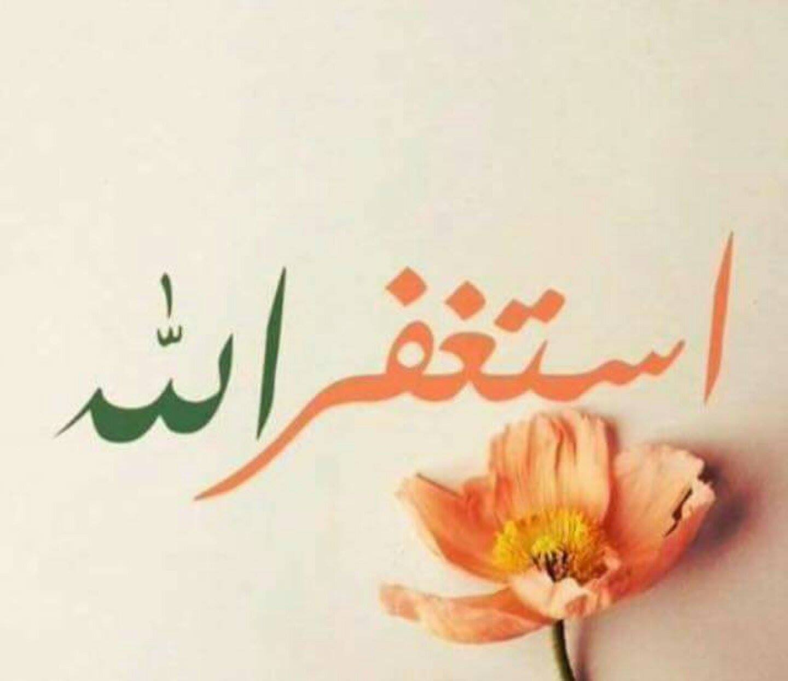

İyiliğe Dönüş; Tövbe
"Ey Müminler! Hepiniz Allah’a tövbe edin ki, dünya ve ahiret saadetine kavuşasınız."
Nur suresi 31
Arap lügatinde döndü anlamına gelen “Tabe” fiilinden türeyen tövbe sözcüğü kalbi saran gafletten uyanarak iyiliğe dönüş anlamına gelmektedir. Tövbenin başlangıcı gafletten uyanıştır; zira ilk olarak kulun günahını idrakidir. Günahını tanıması azımsanmayacak bir ikramdır kula,sonra ardından gelen tövbe bağışlanmaya yolunun kula açılması anlamına gelmektedir.
Sünnet ehline göre doğru tövbenin şartları üçtür:
1.İşlediği kötülükten ötürü pişmanlık
2.Günaha kayışı, onda ısrarı terk
3.İşlediği günahın benzerine dönmemeye azmetmektir.[1]
Kulun dereceleri arttıkça, tövbe makamı farklılaşır. Allah katında makamı yükselen bir kulun gördükleri derecesi ondan aşağı olanlarla bir değildir.

Günahtan Lezzet Almayacak Bir Nefs
Bir alime tövbeden sorulduğunda ” Günahı hatırladıktan sonra onun tadını duymamaktır.” diye cevap vermiştir. Bu sözde, tövbenin amel boyutu kadar kulun nefsine, olduğu kişiye; yani karakterine de bir atıf vardır. Zira Nefis nasıl bir hale gelecek ki, değil günahı işlemek, hatırasından lezzet bile almayacak.. Bunu daha iyi idrak edebilmek kulun yaptığı işin sonucunu sadece o amelin etkilediği alanda değil, tüm yaşamında bizzat benliğinde görmesiyle olur. Günahlar anı zehirleyen, bir kısım ameller olarak işlense de kulun tüm yaşamını ve yaşama bakışını etkiler. Bir başka açıdan bakacak olursak; sosyal psikoloji’de bir kavram vardır; “Bilişsel tutarsızlık” Buna göre; Kişinin inandığı şey ile yaptığı şey arasında bir fark olduğunda kişi bilişsel tutarsızlığa düşer. Oluşan Bu tutarsızlığa bir son vermek için, ya inandığı şeyi değiştirir, ya da yaptıklarını. Konuyu bu açıdan ele alacak olursak günahtaki tehlike açıktır. Günah kişiyi günahın inkarına; yani küfre sürükleyebilecek potansiyeli içinde barındırır.Kalbe Verilen Ceza; Günahlar
“Günahların cezası çoğu zaman kalpte olur. Bu kalplerin hasta oluşu şeklinde tezahür etmektedir.” “Herhangi bir zamanda kulun kalbine sebebini bilmediği bir üzüntü arız olursa bu, hatalara kefaret olan üzüntüdür. Bu üzüntünün aklın, bedenin işlediği hatayı düşünmesi ve muhasebe etmesi anında oluştuğu, aklın zaruri olarak bu hüzne kapıldığı, sanki sebebini bilmiyormuşçasına onu kulun üzerinde tezahür ettirdiği söylenmiştir. ” [2] Kişinin kendiyle barış halinde olması, içindeki çatışmaları çözmesi kalbi ve ruhu için oldukça önemlidir, öyle ki ; psikolojik açıdan nevrozlar ve patolojiler birer dengesizlik hali olarak ele alınır çoğu kez. Bu durumda Allah’a ve ahiret gününe inanan bir müminin günah işlediğinde içine düşeceği çatışmaların kalbini ve ruhunu nasıl etkileyeceği gayet açıktır. Bu çatışmaları çözmesi, kalbi ve ruhuyla barış sağlaması; yani bir başka anlamda, kamil bir imana sahip olmak, inancının tüm vasıflarını eksiksiz üzerinde taşıyabilmek için kula açılan bir rahmet yoludur tövbe.Allah’tan Uzaklığın Alameti; Peşpeşe Günah İşlemektir
Kulun Allahın Gazap ettiği şeylerle devamlı hemhal olması, günahtaki ısrarı onu felakete götürür. Kul ona verilen nimetlerle günahta ısrar edip durdukça o imkanlar onu cezaya götüren birer yol haline gelir. Günaha niyetlenen taatten tat alamaz. [3] Denilmiştir ki; ” Her günah için kalpte biten bir bitki vardır. Günahlar çoğalınca kalbin etrafını meyve kabuğu gibi sarar ve kalbi kapatır. İşte bu durum kalbin kılıfla örtülmesidir.” Bu halin Allah’ın ayeti kerimelerde zikrettiği, kalbin hakkın işitip anlamasına mani olan perde olduğu zikredilmiştir. [4] “Hayır! Bilakis, onların işlemekte oldukları kötülükler kalplerini kapatmıştır.” Mutaffifin 83/14 Günahta ısrarı bir başka açıdan ele alırsak, İnsanın bir davranışı yapmaktaki sıklığı, beyinde hücreler arası kurulan sinirsel bağlantılar sayesinde o davranışın alışkanlık haline gelmesine neden olmaktadır öyle ki, o davranışın adeta otamatikleşmesi sözkonusudur. Kişinin günahlarının hücrelerine sirayeti, tek tek işlenmesi, kişinin tüm varlığına günahın izlerinin sinmesi demektir bu. Özetle; günahta ısrar kul için küfre kadar varabilen en büyük tehlikelerden biridir. Sabır Kalbin Sadakatidir. Günaha sabır kalpteki sadakati gösterir. Bir günahtan el çekmek adeta cennet ve cehennemi görmüşçesine bir imanın delilidir.Günaha İlk Adım; Gaflet
Kişinin kalbinde iman güneşini parlatacak bir tövbe için, ilk olarak gaflet bulutlarının dağılması gereklidir. Zira günahın kaynağı gaflettir. Kişi gaflet tuzağına düşerde günahtaki lezzeti görür, ondaki acılığı görmez. Sadece dünya hayatı varmışçasına bir haldedir kişi gafil haldeyken. Sonsuzluğa bakabilen imanın feraset gözleri kapanmış sadece bu dünyayı ve ondaki lezzetleri gören nefs ile bakar olmuştur kişi. Unutulmamalıdır ki; insanın başına her günahta balyoz inmediği, kişi günahının cezasını hemen çekmediği halde günahlardan vazgeçiyorsa, bu onun görünmeyene iman ettiğinin en büyük kanıtıdır.Hataya Düşenlerin Sığınağı; Tövbe
Günaha ısrara son verdikten sonra günahın akabinde yapılan tövbenin hatalara kefaret olması umulur.Bunu sağlamak için en güzel ameller sekiz tanedir.
Bunların dördü bedenin dördü de kalbin amelleridir:
- İki rekat tövbe namazı kılmak
- Yetmiş defa istiğfar etmek
- Yüz defa “Sübhanallahil azim ve bi hamdihi” demek
- Bir sadaka verip bir oruç tutmak
- Günahtan tövbe edilmesi gerektiğine inanmak
- Günahtan tamamen kurtulmayı sevmek ve istemek
- Günahın cezasından korkmak
- Günahın affedileceğini ümit etmek
Derleyen
Nesibe ZümraKaynakça
[1] Risale-i Kuşeyri sf. 153[2] Kutu’l Kulub cilt: 2 sf. 211
[3] Kutu’l Kulub cilt: 2 sf. 203
[4] Kutu’l Kulub cilt: 2 sf. 208
[5] Kutu’l Kulub cilt: 2 sf. 224